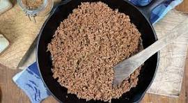

Seasoned Beef

Description
A recipe for a pan of seasoned beef. Can be paired with corn or flour tortillas
You will need:
- Ground Beef
- Garlic Powder
- Onion Powder
- Salt
- Pepper
- Sofrito
- Tomato paste
- Heat a drizzle of oil on pan with medium-high heat.
- Add beef and season with all the dry seasoning
- Break up the beef with a spatula and add in sofrito along with the Tomato paste
- Cook beef until browned